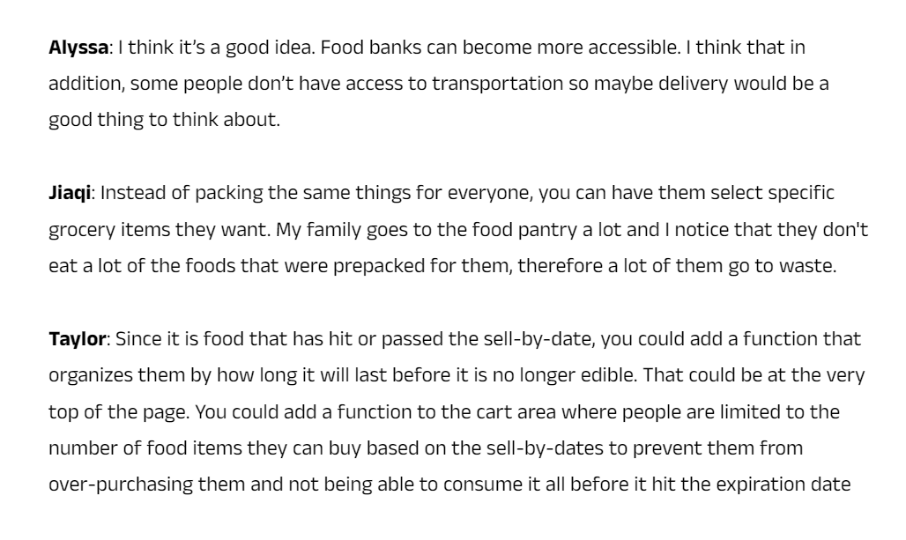

My Role
My role in this project is to create an app that would assist in providing an easier access to food and groceries. I conducted user interiews and identified what the outcomes of this product would consist. What major features this app include, how users can achieve their goal within the app, and how they would go about doing it, were all questions I took into consideration during the research process.
In the design phase, I identified the most important aspects of the app and brainstormed how I could make those aspects not just functional but also intuitive and accessible.
Tools
Figma, FigJam, Procreate
Duration
3 Weeks
Initial Proposal
Inspired by my experience volunteering at a local food bank, where families would drive through and volunteers would load their trunks, I envisioned a similar efficient service where families could swiftly obtain what they need without leaving their vehicles. Recognizing a key issue with the pre-packed food bags lacking consideration for food allergies or dietary restrictions, I aimed to develop an app where time-constrained families could select their desired items for pickup, enabling them to quickly and conveniently collect their groceries without hassle.
Before diving into the brainstorming phase for Foodix, the initial proposal underwent a series of constructive feedback conversations among fellow designers. As a solo designer on this project, the collaborative feedback process served as a blueprint for ideas and a source of valuable insights. The following are a few notes captured during one of these sessions.
Research
SWOT analysis was used to identify the strengths and weaknesses of the apps. Some issues that arose were the potential for users to abuse the delivery system and users who need the it more will be overshadowed. The goal of this app is to provide food for homes in need however, the app shouldn't deny delivery for families either. To solve this, the app only asks for a small delivery fee and for families who struggle due to low income, can apply for a waived delivery fee.